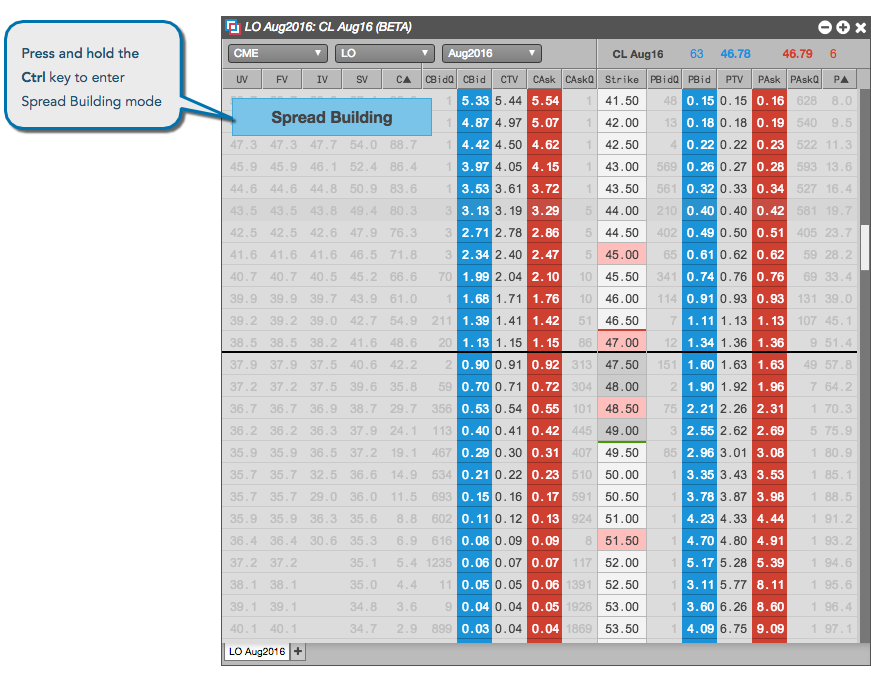
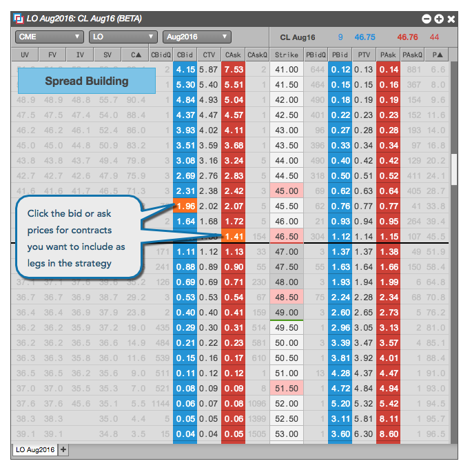
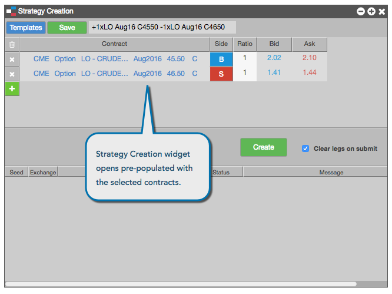

As an advanced options user, you can create a strategy and lock the Greeks and theoretical values for the spread from the Options Chain. You can also lock the spread values from within the Strategy Creation widget independently from the Options Chain.
You lock the Options Chain first, then create the strategy from Options Chain. Or create the strategy fist from the Options Chain, then lock the Strategy Creation widget.
The TV value in the widget is based on the spread built in the Options Chain and is frozen based on the locked underlying price.
From the Options Chain, you can create a synthetic options spread as a user-defined strategy in the Strategy Creation widget. These spreads can be published to the market by the exchange and made available from trading in the current trading session.
To create a strategy in a locked Options Chain:
Press and hold the Ctrl key (control or command key for Mac OS) to enter spread building mode.

Click a Bid price to add for the desired options contract to add a buy leg to the strategy, or click an Ask price to add a sell leg to the strategy.
Multiple clicks on a bid/ask contract increments the ratio/quantity of that leg of the strategy.

Note: If you left-click or right-click on a price in the Strike column, the legs for a straddle strategy are automatically selected.
Release the Ctrl key.
The Strategy Creation widget opens seeded with the options contracts, ratio, and buy/sell direction for each options leg.

In the Strategy Creation widget, make any desired adjustments and click Create to submit your options strategy to the exchange.